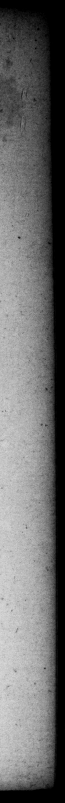

eee an ta in eo etiam luxuria erat: quod ad mediam noctem commeſſationes cum profuſiſſimo e familiarium extende. . ret. Nec minus libido, propter exoletorum & ſpadonum greges, propterque inſignem ine Beronices amorem, cui etiam nuptias pol licitus ferebatur, Sul) quod conſtabat incognitionibus patris nundinari, præmiarique ſolitum. Denique propalam alium Neronem & opinabantur, & prædicabant. At illi ea fama pro bono ceſſit, converſaque eſt in maximas laudes: neque ullo vitiv rerto, & contra vrtutibus ſummis., Convivia 1uttituic jacunda magis, quam profuſa. — elegit, quibus etian. ＋ eum principes ut & ſibi reipubl. neceſlariis acquieverunt, pizcipueque ſunt uſi. Beronicen ide al urbe dimiſic invitus invitam. Quoſdam e gratiſſimis delicatorum, quamquam tam artifices ſaltationis, ut mox ſcenam tenuerint, non modo fovere proli xius, ſed ſpectare omnino in publico cœtu ſuperſedit. Nulli civium quid quam ademit : abſtinuit alieno, ut {1 quis unquam : ac ne conceſlas quide m ad ſolitas collationes recepit. Et tamen nemine ante fe muii ficentia minor. Amphitheatro dedicato, thermiſque - juxta celeriter exſtructis, munus edidit apparatiflimum, larqr ng Dedit & navae prælium in veteri naumaibidem & gladiatores : atque una die quinque millia omne genus ferarum, 8. Natura autem benevolentiſſimus, cum ex inſtituto Tiberii omnes dchinc Cxſares beneficia a ſuperioribus conceſſa principibus, aliter rata non haberent, quam ſi & rapacitas, s : ST ug - — 2 * 8 1 : * _ 5 2 . W 7. Belides his cruelty be tay 443 the ſuſpicion of luxury to "becauſe be _ © + | continue his revels til mil · nige with the moſt 7 of bis acqiee:n- EP tance. Nor was be eſs 222 „ exceſſive lewdneſs, becauſe ofthe ſwarms of catamites and eunuchs. avout. bim, as alſo his famous intriegus with queen Beronice, to whom he was reported ta have promiſed marriage too, He was likewiſe ſuppoſed to be 4 radacious temper; for 1t*s certain in cauſes that came before his father, he uſed to offer his i ntereſ# to ſale, and take bribes. In ſhore people gen declared their ops. nions of him, and ſaid he would prove another Nero. But this ill character | [roved much to bis ad vantage, and did not a little enhance his Praiſes, becauſe there was no vice a in bim, but on the contrary the - nobleſ# virtues, Hu entertainments were n ſant rather than extravagant, and he choſe ſuch a ſet of friends, as the foling princes acquieſced in as neceſſary for them- and the government, He ſent away Ber nice from the city immediately, much againſt both their inclinations, Some of bus old catamites, tho ſuch artiſts in dancing, that they carried all before them upon the ſtage, he was ſo far from treating with any extraordinary kindneſs, that he would not ſo much as ſee them in any publick aſſembly of the people at all, He deprived none of ns ſubjefts of their property, and kept — clear of "all' injuſtice, if ever man did, 7 would not accept of the alluvable and cuſtomary contribu1 And = m_ inferior to none of t nces ore him in generoſity, Harte; , his amphitheater — built ſome warm baths cloſe by it with great expedition, he entertained the peo ple with a ' moſt ample and noble lick diverſion, He likewiſe exhibited 2 ſea e, in the old naumachia, and 4 combat of gladiators in the ſame place, and in one day braught into the theater thouſand wild beaſts of all ſorts. 8. He was by nature extremely bene. valent; for whereas the emperors after Tiberius, according to the example he had 7 them, would not atlow of grant! by former princes as valid, unT. Y L. VESPASTA WUS” 75 . Preter ſevitiam, ſuſpec
